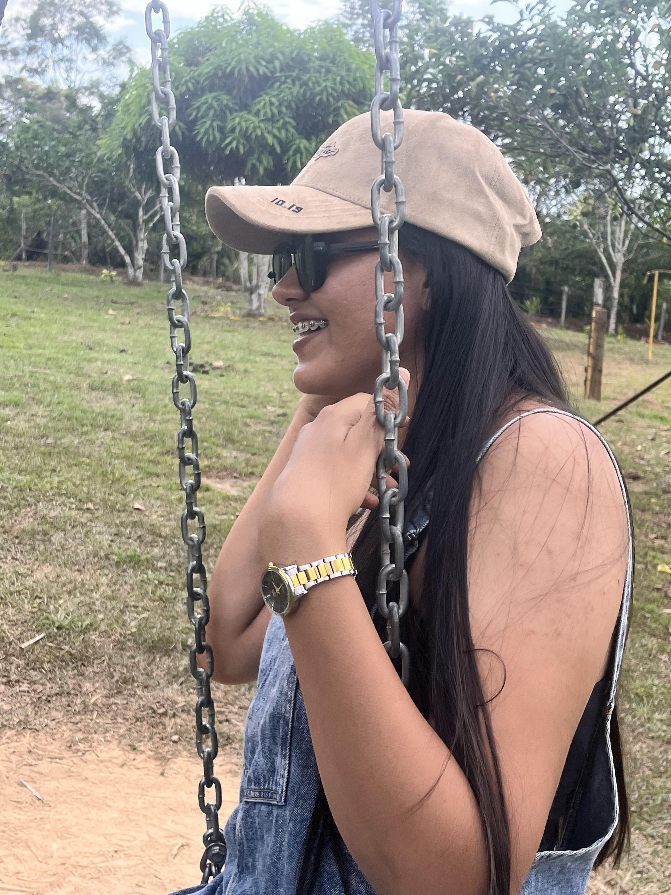
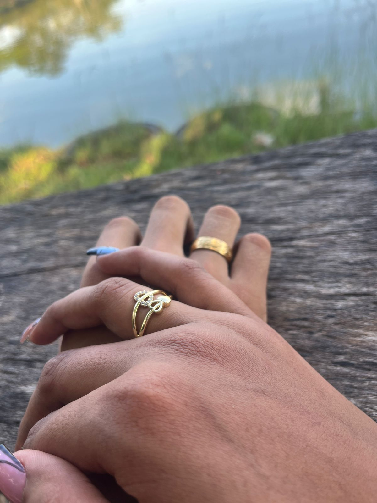

"Mujer virtuosa, ¿quién la hallará? Porque su estima sobrepasa largamente a la de las piedras preciosas."
Proverbios 31:10"Engañosa es la gracia, y vana la hermosura; la mujer que teme a Jehová, esa será alabada."
Proverbios 31:30"Muchas mujeres hicieron el bien; mas tú sobrepasas a todas."
Proverbios 31:29Nuestro Camino Juntos
Han pasado 730 días desde que decidimos caminar de la mano. Estos dos años de noviazgo han sido el regalo más hermoso; cada risa, cada reto y cada oración juntos han fortalecido lo que somos. Gracias por ser mi compañera y mi inspiración constante.
2 Años
Momentos Especiales


